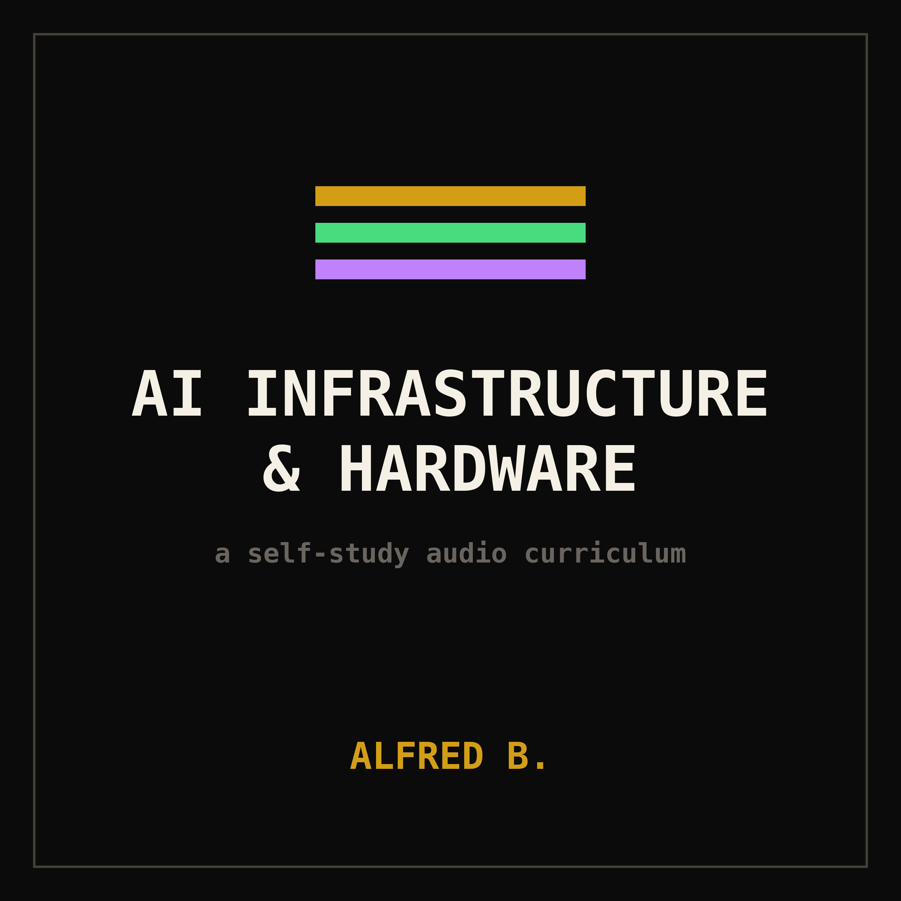

a self-study audio series — roughly two hours across six episodes — on the systems behind generative AI: the value chain layer by layer, the key players, the history, and where the constraints actually bind. two co-hosts, one Australian and one American. built for getting fluent enough to talk about this in a room.
full transcript ships with the next update.
AOEDEIn Episode One we drew the value-chain map from sand to served tokens and flagged where the choke points sit; this episode we descend to the bottom of that map, to fabrication and the equipment beneath it, and I'll open by taking lithography from the photon outward while my co-lecturer takes the optics and the High numerical-aperture transition. Photolithography is printing circuit patterns with light onto a resist-coated three-hundred-millimeter wafer, and the resolution you can print scales with the wavelength of that light, so the entire history of the field is a march to shorter wavelengths. Deep ultraviolet, D-U-V, tops out at one hundred ninety-three-nanometer argon-fluoride light, and to print finer than that on D-U-V you resort to immersion — putting water between the lens and the wafer to raise the effective numerical aperture — and then to multipatterning, where you decompose one fine layer into two, three, or four coarser exposures with deposition and etch steps between them, which multiplies cost, cycle time, and overlay error. The leap that broke that ceiling is extreme ultraviolet, E-U-V, at thirteen-point-five nanometers, roughly fourteen times shorter, and generating it is the hard part. The source is laser-produced plasma: a stream of molten tin droplets, about fifty thousand per second, each hit twice — a low-energy pre-pulse from a solid-state laser flattens the droplet into a pancake or mist, then a high-power carbon-dioxide laser delivering tens of kilowatts vaporizes it into a plasma that radiates at thirteen-point-five nanometers. The pre-pulse architecture is what lifted conversion efficiency to roughly five percent and let source power climb past two hundred fifty watts, which is the threshold for economic throughput. The source is its own sub-industry: Cymer, now wholly owned by ASML, supplies the E-U-V sources and the bulk of D-U-V excimer sources, and Japan's Gigaphoton is the credible second source vendor, strong in D-U-V and a longtime E-U-V challenger. So even inside ASML's machine there is a supplier tier, and the light source is the one ASML chose to buy outright rather than depend upon.
ZEPHYRI'll take the optics and the High numerical-aperture transition, because that is where the deepest sub-tier dependency lives. ASML does not make the mirrors that steer E-U-V light; those come from Carl Zeiss S-M-T in Germany, and the relationship is so tight that ASML took a roughly twenty-four-and-a-half percent stake in Zeiss S-M-T and co-funds its development. E-U-V is absorbed by everything, including air and glass, so the entire optical column is reflective — multilayer molybdenum-silicon mirrors in vacuum — polished to sub-angstrom figure tolerance, by some measures the flattest large surfaces ever manufactured; scale one to the size of a country and the deviations are a fraction of a millimeter. Current production E-U-V runs at zero point three-three numerical aperture. The next generation, High numerical-aperture, raises that to zero point five-five, which improves resolution by roughly a factor of one-point-seven and pushes critical dimensions below eight nanometers in a single exposure, displacing multipatterning on the finest layers. The price is an anamorphic optical design: to keep the mirror angles manageable at zero point five-five, Zeiss demagnifies four times in one axis and eight times in the other, which halves the printable field. A standard exposure field is twenty-six by thirty-three millimeters; a High-N-A half-field is twenty-six by sixteen-point-five, so any die larger than that must be stitched from multiple exposures — a real constraint for big AI dies. The tool is the ASML TWINSCAN E-X-E colon five-two-hundred class, throughput targeted above one hundred fifty wafers per hour, at a price commonly cited around three hundred fifty to four hundred million dollars per system; treat that as an approximation, ASML does not publish it. ASML projects High-N-A reaches roughly a quarter of E-U-V revenue by twenty twenty-eight, and Intel, leaning hardest into it, took the first commercial units.
AOEDENow I'll cover the mask and consumables tier beneath the scanner, because the choke points there are sharper than most realize. The pattern is carried on a photomask, or reticle. For E-U-V the mask is itself reflective, built on an ultra-low-thermal-expansion glass substrate — a market essentially held by Corning and Japan's A-G-C — onto which forty or so molybdenum-silicon bilayers are deposited to make a blank. That blank is the choke point. A defect-free E-U-V mask blank is one of the hardest objects in the industry to make, and Hoya of Japan holds well over seventy percent of E-U-V blank volume, with A-G-C the main alternative; a single low-defect blank can exceed one hundred thousand dollars. Patterning the blank into a finished mask is done by the mask shops — captive lines at TSMC, Intel, and Samsung, plus merchant houses Photronics of the United States, Toppan, now Tekscend Photomask, and Dai Nippon Printing of Japan. Then the pellicle: a thin membrane suspended above the mask to keep particles out of the focal plane. E-U-V pellicles must transmit thirteen-point-five-nanometer light while surviving the heat, and that membrane comes from a very short list — ASML and Mitsui Chemicals — and remained a yield-limiting item for years. So the lithography stack is not one monopoly but a chain of them: Zeiss optics, Cymer source, Hoya and A-G-C blanks, Mitsui pellicles, each a near-sole supplier. The wildcard alternative is Canon's nanoimprint lithography, N-I-L, which abandons projection optics entirely: it stamps a patterned template directly into resist, like a press. Canon's FPA-twelve-hundred-N-Z-two-C resolves about fourteen nanometers, roughly a five-nanometer-class node, and is far cheaper to run with no expensive light source. But it is single-template stamp-and-fill: defectivity, overlay, and throughput are unproven for high-volume logic, so it is a niche and research path — useful for memory or specialty parts — not a near-term replacement for E-U-V, despite recurring claims otherwise.
ZEPHYRI'll take process technology, the transistor itself, and why the node names are marketing. For decades transistors were planar — a flat channel with the gate on top — and as features shrank, the gate lost control of the channel, leakage rose, and the device stopped switching cleanly. Around the twenty-two-nanometer generation the industry went three-dimensional with FinFET: the channel stands up as a fin so the gate wraps it on three sides, restoring electrostatic control. FinFET carried the field from roughly twenty-two nanometers down through five and three. The two-nanometer generation makes the next structural jump, to gate-all-around, sold as nanosheet or, at Intel, RibbonFET: the channel is split into a vertical stack of horizontal sheets and the gate wraps every sheet on all four sides, the maximum possible electrostatic control, and you tune drive current by varying sheet width. The second pillar of this era is backside power delivery. Historically both signal and power wiring sat on the front of the wafer, competing for routing space and causing voltage droop, the I-R drop, as current fought through the stack. Backside power moves the power network to the underside of the wafer through nano through-silicon-vias, freeing the front for signal routing — Intel ships this as PowerVia on its eighteen-A node, TSMC introduces its version, Super Power Rail, on A-sixteen. This is why node names are now pure marketing: nothing on a two-nanometer chip measures two nanometers, the figure abandoned physical meaning a decade ago. What actually advances is transistor density, now measured in millions of transistors per square millimeter — TSMC's N2 delivers roughly fifteen percent higher density than N3 plus speed and power gains, and competing nanosheet processes cluster around two hundred thirty to two hundred forty million transistors per square millimeter, which is how you should compare nodes rather than by their names. The economics of a shrink are brutal and worsening: each generation buys you ten to fifteen percent speed, or twenty-five to thirty percent power, while the wafer costs thirty to fifty percent more to make, because you are adding E-U-V layers, multipatterning, more process steps for backside power, and tighter defect budgets. For most of Moore's Law cost-per-transistor fell with every node; in the FinFET-to-gate-all-around era that curve has flattened or even reversed for some designs, which is why the industry increasingly buys density through packaging and chiplets rather than pure shrink — the squeeze my co-lecturer will quantify on foundry economics.
AOEDEBefore foundry economics I'll cover the materials and metrology sub-tier, because a fab is useless without a continuous river of consumables, and these markets are as concentrated as the equipment. Start with photoresist, the light-sensitive polymer. E-U-V resist is dominated by Japan: J-S-R leads with over twenty percent of advanced photoresist, and J-S-R, Tokyo Ohka Kogyo, Fujifilm, Shin-Etsu Chemical, and Korea's Dongjin Semichem hold roughly half the market between them. The frontier is metal-oxide resist, built on tin-oxo clusters, which absorbs E-U-V far better than conventional chemically-amplified resist — J-S-R bought Inpria, the metal-oxide pioneer, to own that path for High-N-A and sub-two-nanometer nodes. Next, chemical-mechanical planarization slurry, the abrasive chemistry that polishes each layer flat between steps: Fujimi of Japan, Entegris, which absorbed C-M-C Materials, DuPont, and Merck's Versum together hold around seventy percent, with Entegris alone near a quarter. Then specialty and electronic gases — the etch, deposition, and dopant gases — dominated by Linde, Air Liquide, Air Products, Taiyo Nippon Sanso, and Merck. And the substrate the finished die mounts on: A-B-F, Ajinomoto Build-up Film, a dielectric film made by a single food-chemicals company, Ajinomoto, laminated into flip-chip packages by Ibiden, Unimicron, A-T-and-S, Nan Ya, and Shinko, who hold about three-quarters of that market and were a hard supply constraint for AI parts. Finally metrology and inspection — measuring features and finding the microscopic defects that kill yield — where K-L-A holds a near-monopoly in optical inspection, complemented by Applied Materials, Hitachi High-Tech, and Onto Innovation in e-beam and overlay. Every one of these is a quiet single point of failure feeding the visible giants.
ZEPHYRI'll take the wafer-fab-equipment oligopoly and ASML's economics, because the gatekeeping concentrates in five firms. ASML is the apex: one hundred percent of E-U-V, roughly eighty-three percent of all lithography sales, twenty twenty-five net sales near thirty-two-point-seven billion euros at about fifty-three percent gross margin, E-U-V systems alone eleven-point-six billion, and twenty twenty-six guidance of thirty-six to forty billion. Below lithography the field splits by process step. Applied Materials is the broadest, leading deposition, both chemical and physical vapor, plus ion implant, epitaxy, and chemical-mechanical polishing tools — it touches more steps than anyone. Lam Research owns plasma etch and deposition, especially the high-aspect-ratio etch and atomic-layer deposition that three-D NAND memory lives on. Tokyo Electron, T-E-L, dominates the coat-and-develop track that pairs with every ASML scanner, and is strong in etch and thermal processing. K-L-A, as noted, owns process control. The structural point: these are not interchangeable. A leading-edge fab needs all five, each near-irreplaceable in its lane, which is precisely why export-control policy treats this club as a single strategic lever — deny a country these tools and you deny it the leading edge, a thread we develop in the geopolitics episode. The capital math follows: a leading-edge fab now runs upward of twenty to thirty billion dollars before you account for individual tools that cost tens to hundreds of millions each, and a single High-N-A scanner alone approaches half a billion. That capital wall, stacked on the supplier monopolies, is the first of three walls around the foundry.
AOEDEI'll take foundry economics and the leading-edge ramp, and the governing variable is yield — the fraction of working dies per wafer. On a large AI die a few defects can be fatal, so yield sets effective cost per good chip: a wafer that prints sixty dies at forty percent yield gives twenty-four good ones and you eat the cost of thirty-six failures; lift yield to eighty percent and you get forty-eight off the identical wafer at identical cost, halving cost per chip with no design change. That single dynamic is why one firm dominates. TSMC's twenty twenty-five revenue was about one hundred twenty-two billion dollars, guided to over thirty percent growth in twenty twenty-six, on track to be the first chipmaker past roughly one hundred sixty billion, gross margin held deliberately at or above fifty-three percent. Its N2 node entered high-volume manufacturing in the fourth quarter of twenty twenty-five with good yield, ramping from roughly forty thousand wafers a month toward one hundred thousand through twenty twenty-six and potentially two hundred thousand by twenty twenty-seven, demand already exceeding the ramp. The pricing tells the shrink story: an N2 wafer reportedly runs about thirty thousand dollars, and A-sixteen — the twenty twenty-six node adding Super Power Rail backside power for large AI dies — reportedly around forty-five thousand, each node carrying a thirty-to-fifty percent price step. On comparable leading nodes TSMC's yield is reported near eighty percent against competitors below forty — flag those as analyst estimates, never published — and that doubling of good dies, not the marketing label, is the moat. Capital, process knowledge, and yield: three walls, and that is why leading-edge capacity concentrates in Taiwan.
ZEPHYRI'll take the challengers, and the gap is structural. Intel is the most consequential, attempting to reopen as a merchant foundry, Intel Foundry Services, selling capacity to outside customers the way TSMC does — a model alien to a company that historically only made its own chips. Its comeback node is eighteen-A, a roughly one-point-eight-nanometer-class process pairing second-generation RibbonFET gate-all-around with PowerVia backside power, now in volume on products like Clearwater Forest, with fourteen-A behind it as the node where Intel hopes to draw external High-N-A customers. Eighteen-A yields are reported around fifty to sixty percent, estimates that vary, and Nvidia reportedly evaluated the node and then declined to commit. The segment is bleeding cash through the transition — roughly a two-point-three-billion-dollar operating loss on about four-point-two billion in revenue in the third quarter of twenty twenty-five — and Intel's finance chief cautioned that eighteen-A won't reach normal industry margins until around twenty twenty-seven. Samsung Foundry is the nominal number two but a distant one, total foundry revenue around fifteen to eighteen billion in twenty twenty-five, less than a single TSMC quarter; its S-F-two two-nanometer node carries gate-all-around but yields are reported below forty percent against TSMC's near eighty, the persistent gap that keeps the marquee AI customers loyal. There is a structural reason the gap persists beyond engineering talent: TSMC runs the highest leading-edge volume in the world, and yield improvement is a function of learning cycles — every wafer through the line is a data point that feeds defect reduction — so the leader compounds its advantage with each generation, a flywheel competitors cannot match without comparable volume, which they cannot win without comparable yield. That circularity is why second-source foundry strategies keep failing at the frontier even when the physics is reproducible. The lesson: at the leading edge, foundry competition is not really about who can build the transistor — several can — it is about who can build it at a yield that closes the unit-cost gap, and on that axis the field narrows to one.
AOEDEI'll round out the landscape below and beside the leading edge. GlobalFoundries deliberately abandoned the bleeding edge years ago and competes on mature and specialty nodes — radio-frequency, power management, automotive, industrial — because the economics of chasing twenty-billion-dollar fabs against a moving target did not work for them, and it is worth stressing that the overwhelming majority of chips made worldwide are mature-node parts, profitable and essential, just not where the AI fight is. SMIC, China's largest foundry, sits in a structurally constrained position: barred by export controls from buying ASML's E-U-V machines, it is pushing toward advanced nodes using only D-U-V immersion and heavy multipatterning — technically possible to a degree, as Huawei's Kirin parts showed, but slow, low-yield, and expensive, the clearest illustration of how the equipment choke point converts directly into a geopolitical weapon. And the most-watched new entrant is Rapidus in Japan, a state-backed consortium partnered with I-B-M, aiming straight at two-nanometer gate-all-around from its I-I-M-one pilot fab in Chitose; it produced two-nanometer prototype wafers in twenty twenty-five and targets pilot-scale production around twenty twenty-seven, with hundreds of engineers trained at I-B-M's Albany research line. Its declared edge is a single-wafer, rapid-turnaround manufacturing model aimed at specialty AI customers rather than volume parity with TSMC — a genuine, well-funded attempt, but years behind on yield and ecosystem. So the leading-edge logic field is, realistically, TSMC far ahead, Samsung and Intel struggling to close a yield gap, SMIC walled off, and Rapidus a hopeful late entrant.
ZEPHYRI'll take advanced packaging, which is where the binding constraint actually lives today. For decades progress meant shrinking the transistor, but single dies hit the reticle limit — the maximum area printable in one exposure, about eight hundred fifty-eight square millimeters — and you physically cannot print past it. The answer is to stop building one monolithic die and instead stitch several smaller chiplets into one package, which is advanced packaging, and it comes in two geometries. Two-and-a-half-D places multiple dies side by side on a shared silicon interposer — effectively a tiny silicon circuit board carrying tens of thousands of fine connections — giving enormous die-to-die bandwidth. Three-D stacks dies vertically and connects them through the silicon with through-silicon-vias and, increasingly, direct copper hybrid bonding. TSMC's platform is CoWoS, Chip-on-Wafer-on-Substrate, which co-locates the GPU dies and the high-bandwidth-memory stacks on one interposer. The critical variant is CoWoS-L, which replaces the single large interposer with an organic substrate carrying small local silicon interconnect bridges, letting the package exceed the reticle limit by stitching — and that is exactly what Nvidia's Blackwell generation requires. Here is why this gates GPU supply: in twenty twenty-five and twenty twenty-six, CoWoS capacity, not wafer capacity, is the tightest link. Nvidia's roadmap is limited by how many packages TSMC can assemble, not how many dies it can print. Capacity went from roughly thirteen thousand wafers a month at the end of twenty twenty-three to about seventy-five thousand at the end of twenty twenty-five, targeting one hundred twenty to one hundred thirty thousand by the end of twenty twenty-six — nearly a tenfold expansion in three years — and TSMC's chief executive still describes it as effectively sold out. The next frontier is panel-level packaging, TSMC's CoPoS, moving from round wafers to large rectangular panels for far bigger substrates, piloting now for a twenty twenty-eight-to-twenty twenty-nine ramp.
AOEDEI'll cover who actually does the packaging and why it stays a bottleneck, because it is not only TSMC. Outside the foundries sit the O-S-A-Ts — outsourced semiconductor assembly and test firms — and they hold the majority of packaging by revenue. ASE Technology of Taiwan is the largest, having absorbed S-P-I-L, Siliconware Precision, in twenty eighteen; Amkor, U-S-headquartered with operations across Korea and Vietnam, runs around twenty to twenty-three percent; China's J-C-E-T around twelve to fourteen; then Taiwan's Powertech, P-T-I, and others. For the most demanding two-and-a-half-D AI packaging, capacity is essentially TSMC plus ASE and Amkor as overflow, because the qualified-supplier list for interposer build, fine-pitch die attach, and delicate memory-stack bonding is tiny. That is why packaging is a stubborn bottleneck: it is slow and capital-intensive to build, the interposer and H-B-M-attach steps have few qualified suppliers, and they sit downstream of the equally tight A-B-F substrate supply — Ibiden, Unimicron, and the rest — and the H-B-M memory supply we cover next episode. A further squeeze is the through-silicon-via and hybrid-bonding step that stacks logic on logic and memory on logic: direct copper-to-copper hybrid bonding at sub-ten-micron pitch demands atomically clean, flat surfaces and near-perfect alignment, a process pioneered in TSMC's System-on-Integrated-Chips, S-o-I-C, platform and matched by very few. Each of these steps has its own qualification cycle measured in quarters, and a package that integrates a reticle-sized logic die with eight or more H-B-M stacks fails if any one bond, any one interposer trace, or any one substrate layer is defective — so packaging yield compounds the front-end yield problem rather than relieving it. So the conceptual takeaway crystallizes here: the binding constraint on AI compute has migrated. It used to be can we design and print the transistor; now the transistor is the comparatively easy part, and the question is can we package it, can we feed it enough memory, and — later in the series — can we power it. The frontier moved from the die to the package.
ZEPHYRTo close, stack what we've built and you see the geopolitical shape of it. At the base of the entire AI economy sit interlocking near-monopolies: ASML alone makes the lithography, and ASML itself rests on Zeiss optics, Cymer sources, Hoya and A-G-C blanks, Mitsui pellicles, and Japanese resist. TSMC alone runs those machines at leading-edge yield and scale, and TSMC alone controls the CoWoS packaging that gates GPU supply. A five-firm equipment club — ASML, Applied Materials, Lam Research, Tokyo Electron, K-L-A — gatekeeps who can build a fab at all. And these are not just market concentrations, they are geographic ones: lithography in the Netherlands, optics and resist and blanks in Germany and Japan, leading-edge fabrication and packaging in Taiwan, advanced memory in Korea. That overlay of monopoly and geography is exactly why export controls target E-U-V and leading-edge logic, why Taiwan's centrality is called the silicon shield, and why a disruption at any single node — one fab, one fire, one blockade — would cascade up through every layer above it. This is the deepest moat in technology, and now you can name not just the marquee firms but the sub-tier suppliers that make them possible. Next episode we climb one layer up the map, to the chip and the rack: the accelerators that do the math, the high-bandwidth memory that feeds them, and the networking that fuses thousands into a single machine.
AOEDELast episode we sat at the bottom of the map — lithography, leading-edge fabrication, and the CoWoS packaging that gates supply — and this episode we climb one layer to the chip and the rack: the accelerator silicon, the memory that feeds it, and the networking that fuses thousands into one machine, and the throughline you should carry the whole way is that at cluster scale the binding constraint is no longer the compute core, it is the interconnect and the memory subsystem. I'll open on Nvidia's silicon. The current volume part is Blackwell — the B-two-hundred die and the G-B-two-hundred superchip that pairs two of them with a Grace C-P-U — but the part actually ramping through twenty twenty-six is Blackwell Ultra, the B-three-hundred and G-B-three-hundred, carrying roughly two hundred eighty-eight gigabytes of H-B-M-three-E per G-P-U. The reference unit, though, is not a chip; it is the G-B-two-hundred N-V-L-seventy-two rack — seventy-two Blackwell G-P-Us and thirty-six Grace C-P-Us wired by N-V-Link into a single coherent memory domain, a hundred-twenty to a hundred-forty-kilowatt liquid-cooled cabinet that software treats as one enormous G-P-U. That is the product now: the rack. The next architecture is Vera Rubin, the V-R-two-hundred, in the second half of twenty twenty-six — Nvidia's first part on T-S-M-C's three-nanometer-class N-three-P, first on H-B-M-four, first on N-V-Link-six at roughly three-point-six terabytes per second per G-P-U, a dual-reticle design near three hundred thirty-six billion transistors delivering on the order of fifty petaflops of dense low-precision inference. Treat the unreleased figures as previews — the H-B-M-four bandwidth target was reportedly trimmed when memory suppliers fell short of the original spec, exactly the kind of number that moves before silicon ships. Rubin Ultra follows in twenty twenty-seven, Feynman behind it, and the cadence is now firmly annual.
ZEPHYRI'll take the merchant challengers, because the field below Nvidia is thinner than the headlines suggest. The credible buy-it-on-the-open-market alternative is A-M-D's Instinct line. The MI-three-fifty, launched mid twenty twenty-five on the CDNA-four architecture, carries two hundred eighty-eight gigabytes of H-B-M-three-E and won real footprints at Microsoft, Meta, and OpenAI. Its successor, the MI-four-hundred series arriving in twenty twenty-six — the MI-four-fifty-five-X for training and inference, the MI-four-thirty-X for high-performance computing — jumps to H-B-M-four with as much as four hundred thirty-two gigabytes per part at roughly twenty terabytes per second of bandwidth and about forty petaflops of low-precision compute, and crucially A-M-D now ships it as a rack: Helios, seventy-two MI-four-fifty G-P-Us paired with E-P-Y-C C-P-Us, its answer to Vera Rubin. So A-M-D has closed the silicon and the system gap; what it has not closed is the software gap, and on most frontier training runs that, not the hardware, is why it stays concentrated in inference and mid-market fine-tuning — a moat we devote Episode Five to. The other nominal competitor barely registers. Intel's Gaudi line never cleared meaningful volume — it missed even a five-hundred-million-dollar revenue target in its first full year — and Intel has effectively pivoted to a new inference-focused data-center G-P-U, Crescent Island, on its Xe-three-P architecture with a hundred-sixty gigabytes of L-P-D-D-R-five-X rather than H-B-M, a deliberate bet to sidestep the memory crunch, but only sampling to customers in the second half of twenty twenty-six. So the honest merchant landscape is Nvidia dominant with roughly eighty to ninety percent of accelerator revenue and effectively all frontier training, A-M-D the one real alternative, and Intel a distant third still searching for a foothold.
AOEDENow I'll cover the custom-silicon wave, which is the more structurally interesting threat, because it does not come from rival chip vendors at all — it comes from Nvidia's own largest customers building their own application-specific integrated circuits, A-S-I-Cs, designed for one job rather than general use. Google is the pioneer and by far the most mature: its T-P-U, the Tensor Processing Unit, is seven generations deep with Ironwood, the T-P-U-v-seven, an inference-oriented part with a hundred-ninety-two gigabytes of H-B-M per chip that scales to over nine thousand chips in a pod, and Google announced an eighth generation in April twenty twenty-six split into the eight-i for serving and the eight-p for training. Google trains its own frontier models on its own T-P-Us in its own datacenters, a genuine cost and independence advantage, and Anthropic is a major T-P-U customer. Amazon runs two lines — Trainium for training, now at Trainium-three on a three-nanometer node with a hundred forty-four gigabytes of H-B-M-three-E, and Inferentia for inference — its lever to cut the Nvidia tax. Microsoft has Maia, the Maia-two-hundred shipping from early twenty twenty-six with two hundred sixteen gigabytes of H-B-M-three-E, and Meta has M-T-I-A, now on an aggressive multi-generation inference roadmap. But here is the fact the headlines bury: most of these firms do not design these chips alone. They lean on two merchant-A-S-I-C houses — above all Broadcom, and secondarily Marvell — who supply the design methodology, the high-speed interconnect, and the input-output blocks. Broadcom is the lead partner behind Google's T-P-U and behind OpenAI's ten-gigawatt custom-accelerator program. So the accurate framing is not "hyperscalers are escaping Nvidia"; it is "hyperscalers, with Broadcom and Marvell, are building their own chips" — which makes Broadcom one of the most important firms in this entire story even though its name never appears on a product you would recognize.
ZEPHYRI'll round out the silicon layer with the alt-architecture fringe and the economics, because both tell you where the design space is still open. Cerebras builds a wafer-scale engine — rather than dicing a wafer into chips it uses essentially the whole wafer as one processor with a vast pool of on-chip S-R-A-M, aimed at high-speed inference; it went public around May twenty twenty-six, raising roughly five-and-a-half billion dollars at a reported valuation in the forty-to-fifty-six-billion range. Groq makes what it calls an L-P-U, a language processing unit, a deterministic design for ultra-low-latency inference, and in a striking twist at the end of twenty twenty-five Nvidia signed a licensing deal with Groq reportedly worth around seventeen billion dollars. SambaNova builds reconfigurable dataflow units with tiered memory for very large models. None of these threatens the core today, but they prove the question of what an A-I chip should look like is still genuinely contested at the edges. Now the economics that drive all of it. The hyperscalers occupy an awkward seat: they are simultaneously Nvidia's biggest customers and its emerging competitors, and every dollar they spend with Nvidia carries that famous gross margin — the so-called Nvidia tax — straight to Nvidia. Run enough of your own workloads on your own silicon and you capture that margin internally. The financial gravity is real: Nvidia's fiscal twenty twenty-six revenue came in near two hundred sixteen billion dollars, up about sixty-five percent, with a single quarter around sixty-eight billion of which roughly sixty-two billion was datacenter, at gross margins near seventy-five percent. The open interview question is precisely: at what scale does custom silicon's lower unit cost beat Nvidia's ecosystem advantage? For most players on most frontier work the answer is still Nvidia — but the gap is the thing everyone is watching, and it is narrowing fastest at exactly the firms with the deepest pockets.
AOEDEI'll take memory and the memory wall, which I'd argue is the real heart of this episode. Over decades, arithmetic throughput grew far faster than the rate at which we can move data in and out of memory, so you end up with monstrously powerful G-P-Us that spend much of their time idle, waiting for operands to arrive — the math is fast, feeding the math is slow, and that gap is the memory wall. For A-I workloads it is frequently the binding constraint: what governs real throughput is often not how many FLOPs the chip can do but how fast you can stream the model's weights into it, which is memory bandwidth, and how much of the model you can hold at once, which is capacity. The industry's answer is H-B-M, high-bandwidth memory: you stack many D-R-A-M dies into a tower, connect them vertically with through-silicon-vias, and place the stack right beside the G-P-U so a very wide, very short interface delivers bandwidth ordinary memory cannot approach. Every serious accelerator we have named is built around it. The roadmap runs H-B-M-three to the faster H-B-M-three-E that dominated through twenty twenty-five, then to H-B-M-four, which sampled in twenty twenty-five and rushed into mass production around February twenty twenty-six specifically to feed Rubin. And the supply story is as important as the technology, because only three firms make H-B-M and the market is lopsided. S-K Hynix is the clear leader — well over half of the market and the lead supplier to Nvidia, first to qualify on both H-B-M-three-E and H-B-M-four. Micron has climbed to roughly a fifth, overtaking the third player on twelve-high stacks. Samsung sits in the mid-teens to low-twenties, having lagged on qualification but clawing back share as H-B-M-four ramps — on Nvidia's H-B-M-four allocation specifically the split runs roughly mid-fifties Hynix, mid-twenties Samsung, about twenty Micron. Three suppliers, one dominant, and the entire buildout rests on them.
ZEPHYRI'll extend the memory story into its two consequences — the packaging tie-back and the macro ripple — because both come up constantly. First the callback to last episode: to physically seat those H-B-M towers beside the compute die you need advanced packaging, and the dominant platform is T-S-M-C's CoWoS, chip-on-wafer-on-substrate, which mounts the G-P-U chiplets and the H-B-M stacks together on a silicon interposer acting as an ultra-dense wiring layer. A modern accelerator package is no longer one monolithic die — it is several compute chiplets ringed by eight or more H-B-M stacks, because a single die hit the reticle limit, the roughly eight-hundred-fifty-square-millimeter maximum a scanner can print in one exposure, and to go bigger you stitch chiplets, which is what CoWoS-L with its local silicon-interconnect bridges does for Blackwell and Rubin. The point worth internalizing: accelerator supply is gated not by wafers alone but by CoWoS capacity and by H-B-M, all three at once — T-S-M-C roughly ten-x-ed CoWoS output from about thirteen thousand wafers a month at the end of twenty twenty-three toward a hundred-twenty-plus thousand by the end of twenty twenty-six and still describes it as effectively sold out. Second, the macro ripple, a favorite interview detail: because the memory makers are pouring capacity into lucrative H-B-M, they are producing less ordinary D-R-A-M, which has dragged the whole memory market into shortage and pushed prices up on everything down to consumer modules — the H-B-M market roughly fifty-percenting in a year, from the high-thirty-billions toward the high-fifty-billions, with demand growing on the order of a hundred-thirty percent year over year, and analysts projecting the total H-B-M market near a hundred billion by twenty twenty-eight. So the A-I boom is literally making laptop R-A-M more expensive, and the memory subsystem — bandwidth, capacity, and the packaging that attaches it — is the constraint that most often decides who wins at inference.
AOEDEBefore networking I'll cover the workload shift that is quietly re-pricing this entire silicon layer, because it changes which constraint binds. Through twenty twenty-four the buildout was overwhelmingly about training — the giant pretraining runs — but the balance has flipped: inference, actually serving models to users, was roughly half of A-I compute in twenty twenty-five and is projected toward two-thirds in twenty twenty-six as enterprises move from pilots to round-the-clock agentic workloads, and inference-specific infrastructure spend reportedly more than doubled year over year. There is a paradox worth naming for interviews: the cost of a unit of model intelligence — dollars per token — fell on the order of eighty percent in a year, yet total spend exploded, a Jevons-paradox dynamic where cheaper inference induces vastly more of it. This shift is exactly why the silicon roadmap is bending toward memory and away from raw FLOPs. Watch the part names: Nvidia's Rubin C-P-X and the inference-tilted SKUs, Google's T-P-U-eight-i for serving, Intel's Crescent Island with cheap L-P-D-D-R instead of H-B-M, and the whole alt-architecture fringe — Cerebras, Groq, SambaNova — all aim at inference, because that is where the volume and the margin are migrating. There is a second driver behind the shift in scaling: naive pretraining showed diminishing returns as the industry approached the data wall, so capability moved to a new axis — test-time compute, the reasoning models that think longer at inference, plus mixture-of-experts designs that activate only a slice of a huge parameter count per token. Both put even more weight on memory bandwidth and capacity, because a reasoning model generating long chains of thought is streaming weights and a growing key-value cache through the chip the entire time. So the strategic read is: the center of gravity is sliding from a small number of enormous training clusters toward a far larger fleet of inference machines, and on those machines, as I'll keep stressing, memory and interconnect — not arithmetic — set the ceiling.
ZEPHYRI'll take systems integration and the rack supply chain, because the shift from selling chips to selling racks reshaped who actually captures the value. We keep saying the unit of compute is the rack, and the engineering reason is brutal: an N-V-L-seventy-two or a Helios cabinet is not a box of cards, it is a coherent machine where seventy-two accelerators, the C-P-Us, the N-V-Switch or U-A-Link fabric, terabytes of H-B-M, the power delivery, and direct liquid cooling must all be co-designed, qualified, and burned in together, and time-to-deploy becomes a competitive weapon — the firm that can stand up a working pod fastest wins allocation. That integration work increasingly sits with two tiers. The volume tier is the O-D-Ms — original design manufacturers like Foxconn, Quanta, Wistron, and Inventec — who build white-box racks directly for hyperscalers and now account for the majority of server revenue, because a Google or a Meta would rather buy a bare design it controls than a branded system. Above them sit the O-E-Ms — Dell and Supermicro leading, then H-P-E and Lenovo — who add integration, support, and speed-to-market for enterprises and neoclouds that cannot run their own factories; Dell and Supermicro have raced to be first to ship each Blackwell and Rubin variant precisely because that lead converts directly into orders. The number to anchor is scale: the A-I server market reportedly ran on the order of two hundred-plus billion dollars in twenty twenty-five inside a total server market that grew enormously year over year — treat those as analyst estimates that swing with how you define an A-I server. The deeper point is that this systems layer is where the cooling and power problems we cover next episode first become physical: you cannot integrate a hundred-forty-kilowatt rack without solving liquid cooling at the cold plate and power delivery at the busbar, which is why the rack, not the chip, is also where the datacenter constraints start to bite.
AOEDENow I'll cover networking, starting with the distinction that organizes the whole field — scale-up versus scale-out — because the jargon maps onto two physically different problems. Scale-up means connecting the G-P-Us inside one rack or node so tightly they behave as a single processor; scale-out means lashing many racks together across a datacenter into a cluster of tens or hundreds of thousands of accelerators, and different silicon serves each. On scale-up, Nvidia's weapon is N-V-Link, a very high-speed direct G-P-U-to-G-P-U interconnect, paired with a switch chip called N-V-Switch that lets every G-P-U in the domain talk to every other at full bandwidth. The current generation moves on the order of one-point-eight terabytes per second per G-P-U and the fabric knits together hundreds of G-P-Us — that is precisely what makes the N-V-L-seventy-two rack behave as one seventy-two-G-P-U brain rather than seventy-two separate chips, and because N-V-Link is proprietary it is a serious part of the lock-in. The open-standards counter is U-A-Link, a consortium effort meant to give A-M-D and the custom-silicon camp an interoperable scale-up fabric to break that grip. On scale-out there are two camps. One is InfiniBand, a specialized low-latency fabric Nvidia owns through its Mellanox acquisition, long the default for large training clusters. The other is Ethernet — the same fundamental technology that runs the internet, open and multi-vendor and cheaper at scale, historically not tuned for A-I's punishing collective traffic — and the structural trend is unambiguous: Ethernet is gaining. The bridge technology is R-o-C-E, R-D-M-A over Converged Ethernet, which lets machines write directly into each other's memory over standard Ethernet with minimal overhead, and in mid twenty twenty-five the Ultra Ethernet Consortium shipped its version-one-point-zero specification, formally re-engineering Ethernet for A-I and high-performance computing. Both U-A-Link and Ultra Ethernet share one aim: pry interconnect loose from Nvidia, just as the industry would love to pry loose CUDA.
ZEPHYRI'll take the switch silicon and why this layer is where Nvidia is most exposed. The champion of open Ethernet is, once again, Broadcom, whose Tomahawk-six switch chip pushes one hundred two-point-four terabits per second on a three-nanometer process, complemented by the Jericho-four deep-buffer router at fifty-one-point-two terabits for the long-haul fabric between clusters. Broadcom's A-I business has exploded past the dossier's old numbers — A-I semiconductor revenue reached roughly ten-point-eight billion dollars in a single recent quarter, growing around a hundred-forty-three percent year over year and guided higher still, split between those custom A-S-I-Cs and this networking silicon. Nvidia's competing high-radix Ethernet line, Spectrum-X, and its InfiniBand line, Quantum, are formidable but its top-end Ethernet switch of comparable capacity trails Broadcom by roughly a year. The other marquee name is Arista Networks, the leading vendor of the high-end Ethernet switches that wire hyperscaler A-I back-ends, building systems around Broadcom's silicon. But the layer that deserves more attention is the connectivity-and-retimer tier that sits between the switches and the G-P-Us, because as data rates climb past two hundred gigabits per lane, copper signals degrade and you need active conditioning. Astera Labs has built a real franchise here in retimers, P-C-I-e and C-X-L connectivity, and fabric switches for the rack; Credo Semiconductor leads in active electrical cables and S-E-R-D-E-S, and recently moved into silicon photonics by acquisition. These are the unglamorous firms whose serializer-deserializer — S-E-R-D-E-S — and signal-integrity expertise quietly determines whether a rack actually hits its rated bandwidth. So the networking battleground is Nvidia, defending proprietary N-V-Link and InfiniBand and pushing Spectrum-X, against an open coalition spearheaded by Broadcom and Arista and fed by Astera and Credo at the physical layer.
AOEDEI'll explain why this matters so much, then take the optics frontier, because the two are the same story told at different distances. Training a frontier model is as much a networking problem as a compute one: when tens of thousands of G-P-Us work on a single model they must constantly exchange and synchronize partial results — collective communication, the all-reduce and all-to-all operations — and if the fabric between them is too slow, the expensive silicon sits idle and your multi-billion-dollar cluster runs at a fraction of its potential. The metric the architects obsess over is bisection bandwidth: cut the cluster in half and measure how much data can cross the cut — the worst-case communication capacity of the whole machine — and high bisection bandwidth is precisely what lets a cluster scale efficiently. This is why a G-P-U today is sold as part of a networked pod; the chip alone is nearly meaningless, what you buy is a tightly interconnected system where the wiring is engineered as carefully as the silicon. Now optics. As clusters grow, more of the links between racks must be optical — light through fiber rather than electrons through copper — because copper cannot carry the bandwidth over distance without the signal collapsing. Today most of this uses pluggable transceivers, little modules you slot into a switch that convert electrical to optical and back, and the suppliers there are Coherent, Lumentum, and the merchant module makers, with Marvell strong in the underlying optical D-S-P silicon. The problem is power: at A-I scale the energy spent just moving bits between chips is becoming a first-order constraint, and pluggables burn a surprising share of it. The emerging fix is co-packaged optics — bringing the optical engine directly onto the switch package, slashing the electrical distance and the wasted watts — where Broadcom and Nvidia, the latter now backing Coherent with a reported two-billion-dollar investment, are pushing hardest. Watch co-packaged optics; it is a strong candidate for the next great choke point.
ZEPHYRI'll give you the mental model an interviewer is really probing for, then the dossier-grade scorecard. Whenever you look at an A-I workload, ask which of three resources binds it: raw compute, memory bandwidth, or interconnect. For frontier training — the giant runs — the answer is usually a blend, but interconnect and sheer cluster scale dominate, because you are trying to make tens of thousands of chips act as one, so networking and bisection bandwidth are king with memory bandwidth close behind. For inference — actually serving the model, generating tokens one after another — the constraint is very often memory bandwidth, because emitting each token means streaming the model's weights through the chip, so you wait on memory, not arithmetic. That is exactly why high-bandwidth, high-capacity designs and clever memory architectures win at inference, and why low-FLOP-but-well-fed parts can beat a higher-FLOP part that starves — the chip that wins is the one you can feed and the one you can connect, not the one with the biggest arithmetic number on the spec sheet. So the scorecard for this layer: Nvidia leads on silicon and on the N-V-Link interconnect with roughly eighty-to-ninety percent of accelerator revenue and effectively all frontier training; A-M-D is the one credible merchant challenger with Instinct and Helios; the hyperscalers, armed with Broadcom and Marvell, build custom A-S-I-Cs — Google's T-P-U, Amazon's Trainium, Microsoft's Maia, Meta's M-T-I-A — to escape the Nvidia tax; S-K Hynix, Micron, and Samsung control the H-B-M that everything depends on; and an open coalition fronted by Broadcom and Arista is fighting to break the network lock. The frontier moved from the die to the package to the fabric, and the unit of compute is now the cluster, not the chip. Next episode we follow the power cord out the back of that rack — into the building, the cooling, and the grid — because once you have wired thousands of these hundred-kilowatt racks together the question stops being can we get the chips and becomes can we get the power: Episode Four, A-I datacenters, power, and cooling.
AOEDEIn Episode Three we climbed from the die to the rack — the accelerators, the high-bandwidth memory, and the networking that fuse thousands of chips into one coherent machine; this episode we ask where that rack physically lives, and the thesis I'll open with is that the binding constraint has moved out of the silicon entirely and into the building and the grid around it. I'll take power density, because it is the hinge the whole episode turns on. A rack is the standardized cabinet that holds the servers, and for the entire cloud era a normal rack drew roughly ten to fifteen kilowatts — kilowatt being one thousand watts — and that heat was carried off by blowing cold air through the cabinet. The whole design language of the data center, raised floors, hot-aisle-cold-aisle containment, big computer-room air handlers, was built on that assumption. Now look at the reference design for this generation, Nvidia's G-B two hundred N-V-L seventy-two — seventy-two Blackwell graphics processors and thirty-six Grace processors in a single cabinet drawing around one hundred thirty to one hundred forty kilowatts, of which the large majority must be removed by liquid, not air. That is not incrementally more than the old rack; it is roughly ten times the density in the same footprint. And the trajectory steepens: the Vera Rubin generation, the N-V-L one-forty-four landing in the second half of twenty twenty-six, pushes rack draw toward the one-hundred-eighty-to-two-hundred-kilowatt band, and operators are already planning campuses around a future five-hundred-kilowatt-to-one-megawatt rack — M-W being megawatt, one million watts. Once power density jumps by an order of magnitude every downstream assumption breaks: how you cool it, how you wire it, how many you fit in a building, how much grid you must secure. Density is the forcing function, and my co-lecturer will take what it breaks first, which is cooling.
ZEPHYRI'll take the cooling transition, because it is the most concrete physical consequence of that density jump. Air is simply a poor medium for moving heat — it works fine at ten kilowatts, strains around forty, and falls apart past fifty, and you cannot blow enough cold air across a one-hundred-forty-kilowatt rack to keep the chips from cooking. So the industry is marching through three stages. Stage one is the air cooling we just described. Stage two, happening at scale right now, is direct-to-chip liquid cooling, sometimes called D-L-C: you run a coolant, usually a water-glycol mix, through metal cold plates sitting directly on the hottest dies, the graphics processors and the processors. The heat exchange happens at the coolant distribution unit — the C-D-U — which isolates the facility water loop from the clean technology loop running to the racks; in-rack and in-row C-D-Us now scale into the megawatt-plus range per unit. Alongside them sit rear-door heat exchangers, liquid-cooled radiators bolted to the back of a cabinet for hybrid retrofits. Stage three, still emerging, is immersion — submerging whole boards in a dielectric fluid that does not conduct electricity. The crossover is the headline: liquid-cooled capacity is reported to have matched air in twenty twenty-five and is projected to roughly double air by the end of twenty twenty-six, an enormous retrofit problem since most existing halls were plumbed for air. The supply chain is consolidating violently around this. Vertiv leads C-D-Us with an estimated low-double-digit share, with Schneider Electric, Rittal, Stulz, and Boyd rounding the top five; the specialist tier is Asetek, CoolIT, LiquidStack, Green Revolution Cooling, Chilldyne, and Motivair. And the money confirms the thesis — Eaton is reported to be acquiring Boyd Thermal for around nine-and-a-half billion dollars, Ecolab buying CoolIT for roughly four-point-seven-five billion, Daikin taking Chilldyne. The plumbing has become strategic.
AOEDEI'll go one layer deeper into the thermal stack, because cold plates are only the visible half and the facility-side plumbing is where the engineering pain concentrates. Below the C-D-U sit two heat-rejection paths. The traditional one is the chiller plant with a cooling tower, which rejects heat to the atmosphere by evaporating water — efficient on energy, brutal on water, and the reason data-center water draw became a political story. The alternative is the dry cooler or air-cooled chiller, which rejects heat with fans and refrigerant and consumes almost no water, but burns more electricity and performs worse on hot days — that is precisely the water-for-power trade my co-lecturer flagged, and at the rack densities we are now discussing it pushes operators toward warm-water cooling, running the loop at higher supply temperatures, sometimes above forty-five degrees Celsius, so the facility can reject heat without mechanical chilling for much of the year. On immersion, distinguish the two flavors: single-phase, where the dielectric fluid stays liquid and is pumped through a heat exchanger, and two-phase, where the fluid boils on the chip and condenses above it, which is thermally superior but tangled in fluid-chemistry concerns — several per-fluorinated coolants face environmental and regulatory pressure, which has slowed two-phase adoption. The unglamorous bottleneck inside all of this is the fluid network itself: quick-disconnect couplings, manifolds, leak detection, and filtration, the parts that must be perfect because a leak over an energized board is catastrophic — which is exactly why Vertiv paid roughly a billion dollars for the flushing-and-commissioning specialist PurgeRite, and why coupling makers like CPC and Staubli quietly became critical suppliers. The lesson for the interview is that the cooling transition is not a single product swap; it is a re-plumbing of the entire building, from the chip surface out to the cooling tower, and every link in that chain has its own scarce specialist.
ZEPHYRI'll cover where this capacity is physically landing, because geography is now a first-class constraint, not an afterthought. For two decades the default hub was Northern Virginia — Loudoun County, so-called Data Center Alley — which still carries the largest concentration on earth, but it has effectively run into a power wall: the local utility, Dominion, has interconnection commitments stretching years out, and new large loads there now wait in line behind a queue measured in gigawatts. So the map is redrawing toward wherever stranded or fast-deployable power exists. Central Texas, on the E-R-C-O-T grid, has become a magnet precisely because that grid is independent, permits faster, and sits next to abundant natural gas — which is why OpenAI's Stargate flagship landed in Abilene and why xAI built Colossus in Memphis on the neighboring system. Other surges are following power and cheap land into Ohio, Indiana, Wyoming, the Phoenix corridor in Arizona despite its water stress, and increasingly the Gulf Coast near gas supply. Internationally the same logic drives builds toward the Nordics for hydro and free cooling, the Gulf states for cheap energy and sovereign capital, and Malaysia's Johor corridor as an overflow for Singapore, which froze new data-center approvals over grid strain. The deep point is that an AI campus is now sited the way an aluminium smelter or a chlor-alkali plant is sited — you put it where the cheap, abundant, fast power is, and you accept whatever else comes with that location, because power availability dominates every other variable including latency and proximity to users. That is a profound inversion: for the cloud era, data centers chased network and population; for the AI era, they chase electrons. And it feeds directly into the next constraint, because once you have chosen your power-rich site, the question becomes how you actually secure those electrons — which is where my co-lecturer takes the grid.
AOEDEI'll take the efficiency metrics, because they are how operators talk and how an interviewer will test you. Start with power usage effectiveness — P-U-E — the ratio of total facility power to the power that actually reaches the computing equipment. If a hall draws one hundred units and ninety reach the servers while ten go to cooling, conversion losses, and lighting, the P-U-E is about one-point-one-one; a perfect, unreachable score is one-point-zero. The global fleet average has plateaued around one-point-five-five-to-one-point-five-eight since roughly twenty twenty, but the best hyperscale campuses run near one-point-one or better, and — a genuine irony — the shift to liquid actually improves P-U-E, because moving heat with liquid spends far less overhead energy than moving it with air. The candid caveat: P-U-E is gameable. You can flatter it by excluding certain conversion losses, or by measuring on a cool day, so treat any single advertised figure as directional and partly a marketing number. The metric that matters more in twenty twenty-six is water usage effectiveness — W-U-E — liters of water consumed per kilowatt-hour of compute, mostly through evaporative cooling. The fleet average sits around one-point-eight-to-one-point-nine liters per kilowatt-hour; leaders like Microsoft report fleet W-U-E near zero-point-three. This is now a siting constraint, not a footnote: roughly two-thirds of new United States hyperscale campuses since twenty twenty-two reportedly sit in high or extreme water-stress counties, and AI cooling load has multiplied severalfold since then. The response is closed-loop, zero-water-evaporation designs — Microsoft is piloting these at its Phoenix and Mount Pleasant builds in twenty twenty-six — which trade water for electricity, since a dry cooler rejects heat with fans and chillers instead of evaporation. That trade-off is the whole game, and it hands the baton to my co-lecturer, because electricity is the constraint behind every other constraint.
ZEPHYRI'll take the power bottleneck, the core argument of this episode, and the claim is blunt: electricity, land, and grid interconnection — not chips — are increasingly the gating inputs to AI. Start with scale. Global data-center electricity is projected to exceed roughly one thousand terawatt-hours by the end of twenty twenty-six, comparable to the entire annual consumption of Japan. In the United States, data-center demand is estimated to roughly double from around eighty gigawatts — G-W, billion-watt units — in twenty twenty-five toward one hundred fifty gigawatts by twenty twenty-eight, almost all of it AI, which is the equivalent of adding dozens of full-size power plants in three years. And here is the wall: the grid interconnection queue. To plug a large new load or generator into the grid you file a request, the utility studies whether transmission and substations can take it, and that request joins a queue that as of twenty twenty-five had ballooned past roughly fifteen hundred gigawatts of pending capacity in the United States, with new connections in the major data-center hubs facing waits of four to seven years. You can take delivery of a building full of Blackwell racks in months; energizing them can take half a decade. Worse, the heavy iron is itself scarce. Large power transformers now carry lead times reported around two-and-a-half years and stretching, by some accounts, toward four to five for the largest units — generator step-up demand is up well over two hundred percent since twenty nineteen — and the chain is throttled upstream by grain-oriented electrical steel, high-voltage bushings, and on-load tap changers, each served by a handful of qualified suppliers. High-voltage switchgear runs many months. Industry analysts now estimate that close to half of planned United States data-center builds this year face delay or cancellation, and the cause is rarely the chips — it is the transformer, the switchgear, and the queue.
AOEDEI'll continue on power, because the response to that wall is the most important strategic shift in the sector — operators have stopped waiting for the public grid. The first move is behind-the-meter generation: building your own power on site, electrically behind the utility meter, to beat the queue entirely. The fastest path is on-site gas — turbines installed next to the campus — and Meta and Elon Musk's xAI both rushed gas generation in precisely to avoid multi-year waits; xAI's Colossus site in Memphis is the poster child, self-generating to stand up hundreds of thousands of graphics processors fast. Roughly thirty percent of anticipated new capacity is now projected to come from on-site generation, up from essentially zero a year prior — a reversal of a century-long assumption that big industrial loads simply plug into the grid. But the turbines are their own choke point: GE Vernova's gas-turbine backlog has stretched into the late twenties, with the company guiding that reservations may be effectively sold out through twenty thirty by the end of twenty twenty-six, and Mitsubishi and Siemens Energy similarly booked, so an on-site turbine slot is now as scarce as a grid connection. The second instrument is the power purchase agreement — P-P-A — a long-term contract to buy electricity directly from a specific generator, locking price and supply. The third, and the headline-grabber, is nuclear, including small modular reactors — S-M-R — factory-built reactors meant to deploy faster than a conventional plant. The deals are real: Microsoft's roughly eight-hundred-thirty-five-megawatt Three Mile Island restart under a twenty-year P-P-A, Google with Kairos Power, Amazon backing X-energy and its Susquehanna campus, and Meta contracting across TerraPower, Oklo, Vistra, and Constellation for multiple gigawatts. By mid-twenty twenty-six every major hyperscaler had signed nuclear, but note the timeline — the first restart electrons arrive around twenty twenty-seven and most S-M-R units land in the thirties. The signal is unmistakable: the most sophisticated technology firms on earth have concluded the gating input to AI is power, and they are now in the business of procuring generation.
ZEPHYRI'll take the capex supercycle, because it is what ties this physical story to the money and the demand signal for the entire chain. Capital expenditure here means spending on long-lived physical assets — buildings, chips, power, cooling — and the AI buildout has triggered an extended, unusually large surge in it. I'll frame these carefully: the dossier and the sources flag them as investor guidance, not booked results, so treat them as the companies' own forecasts. Combined big-tech capex for twenty twenty-six is widely reported in the range of roughly six hundred to seven hundred twenty-five billion dollars, up from somewhere around three hundred sixty-five to five hundred billion in twenty twenty-five, with roughly three-quarters tied directly to AI infrastructure. By company, as reported ranges: Amazon around two hundred billion dollars, up from roughly one hundred twenty-five; Alphabet around one hundred seventy-five to one hundred eighty-five billion, up from about ninety-one; Meta around one hundred fifteen to one hundred thirty-five billion, up from roughly seventy-two; and Microsoft around one hundred ten to one hundred twenty billion, up from about ninety. Layered on top are the lab-driven greenfield megaprojects: the OpenAI, Oracle, and SoftBank Stargate program, headlined at a five-hundred-billion-dollar ambition, with the flagship Abilene, Texas campus — built by Crusoe and Lancium — topping out toward one-point-two gigawatts. The reason this is the single most-watched number in the sector is that hyperscaler capex is the demand pulse for everything we have built across these episodes: when these firms raise guidance, TSMC, Nvidia, the high-bandwidth-memory makers, and the power-and-cooling vendors all respond. The stress signal worth flagging — big tech issued roughly one hundred billion dollars of bonds in early twenty twenty-six to fund this, and investors bought record credit-default-swap protection against them, an early bubble tremor we treat properly next episode. The capex print is the heartbeat, and it is increasingly financed, not self-funded.
AOEDEI'll take the build-versus-lease decision and the megaprojects, because that is what those capex dollars actually buy on the ground. A hyperscaler facing this demand has three procurement modes and runs all three at once. It can self-build — own the land, design, and construction — which gives maximum control and the best long-run economics but is slow and ties up capital. It can take a powered shell from a wholesale developer and fit it out itself, trading some economics for speed and balance-sheet relief. Or it can lease turnkey capacity from a colocation operator and simply move servers in. The reason the lease side has exploded is timing: when the constraint is the four-to-seven-year grid queue, a developer who pre-secured power and broke ground two years ago is selling something a hyperscaler physically cannot self-build fast enough, which is why powered-shell pre-leasing now runs years ahead of construction and why vacancy in the primary markets sits near record lows. Look at the scale of the self-builds to feel the shift: Meta's Prometheus cluster in Ohio is designed past one gigawatt and coming online through twenty twenty-six, with its Hyperion campus in Louisiana scaling toward roughly five gigawatts over several years; xAI's Colossus reached on the order of half a million-plus graphics processors and around two gigawatts, built in a famously compressed timeline by self-generating power. These are single sites approaching the electricity draw of a mid-size city. And the financing increasingly blends modes — a hyperscaler signs a long-term lease, the developer raises project debt against that lease, private-equity and infrastructure funds like Blackstone, DigitalBridge, and KKR supply the equity, and the asset is structured almost like a toll road. The buildout is no longer a tech-company expense line; it has become an infrastructure asset class, and that reframing is what my co-lecturer will pull apart in the leasing tier.
ZEPHYRBefore the leasing tier, I'll surface the economics that hang over every dollar of this, because the dossier flags it as the central financial argument of the era and you must be able to argue both sides. Two concepts. The first is depreciation — spreading an asset's cost over its useful life. The accounting question that matters is the assumed life of a graphics processor, and several hyperscalers recently extended their server-depreciation schedules toward five or six years, which mechanically lowers reported annual cost and lifts profit. The bear case is that this is optimistic: Nvidia now ships a new generation every year — Blackwell, Blackwell Ultra, then Rubin — and an accelerator two generations old is far less competitive on performance per watt, so if the true economic life is closer to three years, reported earnings overstate the real return. The second concept is return on invested capital — whether the profits these assets throw off exceed the enormous capital sunk into them. With six-hundred-billion-plus flowing in annually, the honest answer is that it is genuinely contested: the bulls point to real, growing inference revenue and to compute that sells out the moment it is energized; the bears point to the bond issuance, the credit-default-swap buying, and the circular financing where Nvidia invests in the labs that buy Nvidia hardware. You do not need to resolve it — you need to articulate it cleanly, because an interviewer raising AI-bubble concerns is testing whether you can hold both the depreciation-schedule risk and the demand-is-real rebuttal in the same answer. Keep that tension in mind as my co-lecturer maps the leasing tier, because the most leveraged, most contested balance sheets in this whole story live precisely in that layer of landlords and compute-renters.
AOEDEI'll take the layer the dossier flags as crucial and most often muddled — the colocation and leasing tier, which you must hold distinct from the cloud operators sitting above it. The cleanest way to think about it: the cloud operator runs the computers and rents you compute as a service; the colocation layer is the landlord — it owns dirt, power, and cooling, and leases physical capacity to whoever brings the machines. Within that landlord layer there are three sub-tiers worth naming precisely. First, interconnection or retail colocation, whose product is connectivity and dense cross-connects between many tenants — Equinix is the archetype, the meet-me-room of the internet, now guiding toward roughly ten billion dollars of revenue in twenty twenty-six and investing four-to-five billion a year to roughly double capacity by twenty twenty-nine. Equinix's value is the network density inside the building, not raw megawatts. Second, the wholesale and hyperscale developers — the powered-shell landlords — who lease very large, single-tenant footprints by the megawatt to one hyperscaler at a time: Digital Realty, the public R-E-I-T at around six-and-a-half billion in twenty twenty-six revenue, alongside privately held Vantage, QTS — now owned by Blackstone — CyrusOne, CoreSite, Switch, Aligned, Compass, and STACK Infrastructure. A powered-shell, by the way, is exactly that — a building with power, water, and structure delivered, but the racks and fit-out left to the tenant. Third, the AI-greenfield specialists building bespoke, behind-the-meter, liquid-cooled campuses for a single AI customer — Crusoe is the marquee name there, the Stargate builder. The distinction matters for the interview: an R-E-I-T like Equinix or Digital Realty is a real-estate-and-power business earning a lease spread, structurally different from a CoreWeave-style neocloud renting graphics processors, or from Amazon, Microsoft, and Google renting software services. Same campus, three different businesses, three different risk profiles — landlord, compute-renter, and cloud operator.
ZEPHYRI'll close by stacking the building on the chain we have been climbing and pointing at what comes next. Run the dependency chain one more time and the shape of the constraint is unmistakable: you can fabricate a Blackwell die, package it, stack the high-bandwidth memory, and wire seventy-two of them into an N-V-L seventy-two — and still not turn the building on, because you are waiting eighteen months for a transformer, four years for grid interconnection, a turbine slot booked into the thirties, and a C-D-U from a vendor that just got acquired. The frontier moved from the die to the package in the last episode; this episode it moves again, out of the silicon entirely and into electrons, copper, water, and concrete. And notice the financial texture beneath it: the depreciation life of a graphics processor is genuinely contested — Nvidia now ships a generation every year, Blackwell, then Blackwell Ultra, then Rubin — so if the real economic life is shorter than the five-or-six-year accounting life, returns are thinner than they look, which is exactly why the bond issuance and the credit-default-swap buying matter. We also drew the most important organizational map of the series: the landlord tier — Equinix in retail interconnection, Digital Realty and the powered-shell developers in wholesale, Crusoe in AI greenfield — sitting beneath the cloud-and-operator tier, distinct businesses too often blurred into one word, cloud. Hold that distinction, because it is where the next episode lives. Episode Five climbs into industry economics and geopolitics: why hyperscalers design their own silicon even while buying Nvidia's, how the model labs underwrite this entire buildout with multi-gigawatt commitments, the CUDA software moat, the circular financing that worries the bubble watchers, and the export controls and Taiwan concentration that turn this whole supply chain into an instrument of statecraft. We have built the machine and powered the building; next we follow the money and the power — the political kind.
AOEDEIn Episode Four we ended at the wall — the gigawatt campus, the liquid-cooled rack, and the realization that electricity, not silicon, now paces the build-out. This episode we step off the physical layer entirely and ask where the money actually pools, and I'll open with the deepest moat in the business, which is not Nvidia's transistors but its software. The framing to hold in an interview is platform versus platform, not chip versus chip. CUDA — Compute Unified Device Architecture — is the layer that turns a die into something a developer programs, and the durable lock-in is the library stack riding on top: cuDNN for the neural-network primitives, cuBLAS for linear algebra, TensorRT for inference, and NCCL, the collective-communications library that lets thousands of G-P-Us exchange gradients without stalling. Nvidia shipped CUDA in two thousand six, two decades before anyone knew deep learning would matter, and that patient bet compounded into an ecosystem variously estimated near four million developers — treat that as a vendor figure — with PyTorch, JAX, and TensorFlow all first-class citizens tuned to run best there. The practical result is a win rate on frontier training runs that rounds to one hundred percent. Every frontier model you have heard of was trained on Nvidia. The lock is real because a rival can match raw performance and still lose: switching means rewriting and re-tuning an enormous body of hand-optimized kernels, and the asynchronous, custom-tuned ones are the hardest to port. Now, where the moat is widest, the siege is heaviest, and the honest read is that the cracks are real but slow. The point an interviewer wants is that the genuine threat is not a rival G-P-U — it is the abstraction layer above the chip and the hyperscaler A-S-I-C below it, which my co-lecturer will take in turn. Hold that distinction: Nvidia's enemy is not AMD's next part, it is the software that makes the part underneath it interchangeable.
ZEPHYRI'll take the cracks themselves and the value-capture map, because that is where the strategy gets concrete. The open challenger is AMD's R-O-C-m, the Radeon Open Compute stack, and the fair verdict is that it has earned real traction in inference and at smaller shops but still trails badly in frontier training, because porting complex CUDA kernels remains genuinely hard. The cleverer attacks are indirect. OpenAI's Triton is a Python-level kernel language aiming to be hardware-agnostic — write once, retarget. PyTorch's version-two compilers increasingly act as a leveling layer that demotes the chip underneath to a backend. And the compiler infrastructures, M-L-I-R and X-L-A — accelerated linear algebra, the compiler Google uses to target its own silicon — abstract the hardware further still. Each erodes lock-in for specific workloads, but none has dissolved it. The deeper threat is the in-house A-S-I-C — application-specific integrated circuit — because it sidesteps CUDA entirely with its own stack: Google's T-P-U on X-L-A and JAX, A-W-S Trainium on Neuron. That is why this matters for value capture. Walk the chain and the gross margin pools at two nodes. Nvidia's overall gross margin sits near seventy-five percent — its first-quarter results this year showed about seventy-five with data-center revenue around seventy-five billion dollars in a single quarter, and analysts put the Blackwell-class parts even higher. TSMC, which actually fabricates those dies, runs a gross margin in the mid-sixties now — its first quarter this year printed around sixty-six percent, and it lifted its through-cycle target above fifty-six. The equipment tier below, ASML, holds low-to-mid fifties. So the design-and-platform layer captures the most, the foundry captures the next slab, and the further down the equipment and materials chain you go the thinner it gets — which is precisely the logic driving everyone to integrate toward the fat end.
AOEDEI'll take why the hyperscalers build their own chips, because it follows directly from that margin map. The motive is the Nvidia tax: when roughly three-quarters of a G-P-U's price is the seller's gross margin, and you are buying tens of billions a year, every dollar you keep by designing in-house is enormous. That is the whole logic of custom silicon. Google's T-P-U is the most mature example, now many generations deep, with Anthropic as a major training customer — the clearest proof a frontier lab can train at scale off Nvidia. Amazon runs Trainium for training and Inferentia for inference; Microsoft has Maia, Meta has M-T-I-A. The tension you should be able to articulate is that these firms are simultaneously Nvidia's largest customers and its emerging rivals — buying tens of billions in G-P-Us while spending billions to escape needing them, unable to cut the cord because CUDA and Nvidia's annual cadence still own training. And the silent enablers are Broadcom and Marvell, which do not sell a finished accelerator brand — they co-design the custom chips. Broadcom is the lead partner behind Google's T-P-U and OpenAI's accelerator program, so when someone says custom silicon is coming for Nvidia, what they often mean concretely is that Broadcom is building the alternatives. Now the second-order point, the one that separates a sharp answer from a glib one: even when a hyperscaler designs its own A-S-I-C, it still buys the package from TSMC, the high-bandwidth memory from S-K Hynix, and the networking switch silicon from Broadcom. The custom chip escapes the Nvidia tax but not the TSMC tax, not the H-B-M tax, not the packaging bottleneck. Vertical integration relocates which monopoly you pay; it does not free you from the chain. That is why the in-house A-S-I-C dents Nvidia's share without breaking the underlying choke points my co-lecturer mapped.
ZEPHYRI'll take cloud versus neocloud economics, because the financing structure here is where the bubble argument actually lives. The hyperscalers — Amazon, Microsoft, Google, Meta — are guiding combined twenty twenty-six capital expenditure somewhere in the six hundred to seven hundred-billion-dollar range, up sharply from last year, the overwhelming majority tied to AI infrastructure, and they fund it from their own cash flows plus, increasingly, bond issuance — roughly a hundred billion in fresh debt early this year, with credit-default-swap protection bid up, an early bubble-watch signal. Alongside them sits a newer, more fragile layer: the neoclouds, the G-P-U-specialist clouds. CoreWeave is the bellwether — first-quarter revenue this year roughly two billion dollars, more than double year-on-year, a reported backlog near one hundred billion, and still a G-A-A-P net loss around seven hundred forty million, because the model is intensely capital-intensive and debt-fueled, even as adjusted earnings before interest, taxes, depreciation, and amortization run a healthy margin. Behind it, Lambda, Crusoe, and Nebius play the same game. The mechanism to understand is G-P-U-as-collateral financing: a neocloud borrows against the G-P-Us it owns and against the long-term take-or-pay contracts a lab has signed, then uses the loan to buy more G-P-Us. That works only if the chips hold residual value and the contracts hold up — and G-P-Us depreciate fast as Nvidia ships a new architecture every year, so the collateral is a melting asset. Layer on vendor financing — Nvidia investing in the very customers buying Nvidia, equity stakes in the neoclouds those customers rent from — and you get the circular-financing concern: chip maker funds the lab, lab pays the cloud, cloud buys the chips, and the same handful of names appear on every side. Aggregated, analysts now put that loop north of eight hundred billion dollars, with some drawing the dot-com comparison. The candidate's line is neither all-fake nor all-real: a meaningful share is announced, multi-year, partly circular commitment, and the open question is how much is durable end demand versus vendor-financed velocity.
AOEDEI'll take training versus inference economics, because the two halves of the business behave nothing alike and the balance is tipping. Training is a bursty capital bet — you assemble an enormous cluster, burn electricity and chip-time for weeks to produce one model, and the run ends; it is lumpy, front-loaded, a wager that the result earns its keep. Inference is the opposite: a continuous, twenty-four-hour cost incurred on every query for as long as the product lives, which makes it brutally margin-sensitive, because a fraction of a cent per token is paid out billions of times. The defining trend of this cycle is the shift toward inference. It was roughly half of all AI compute last year and is projected nearer two-thirds this year, and several executives describe a long-run flip from eighty percent training toward eighty percent inference. Inference infrastructure spend reportedly jumped from around nine billion dollars last year to roughly twenty this year, driven by enterprises moving from pilots to always-on agentic workloads that run and take actions continuously. Here is the paradox to internalize: the price of a unit of intelligence — cost per token — fell on the order of eighty percent year over year, yet total inference spend exploded anyway. That is a Jevons-paradox effect — make a thing cheaper and you consume so much more that aggregate spend rises. Cheaper inference grows the market rather than shrinking it, which is the rebuttal to anyone who reads falling token prices as a collapsing business. Competitively, this is the opening for everyone who is not Nvidia, because the moat is strongest in frontier training and weakest in inference — where R-O-C-m has its best traction, where Inferentia and the inference-tuned startups compete, and where total-cost-of-ownership reasoning, counting power and cooling and networking over years, can beat ecosystem lock-in. The more the world tilts to inference, the wider that door swings — the through-line into the model-lab economics my co-lecturer takes next.
ZEPHYRI'll take the model labs, the demand engine, and the headline here is a reordering you must narrate carefully. These labs do not merely buy compute, they pull it into existence — signing multi-year, multi-gigawatt, hundreds-of-billions-dollar commitments that underwrite the entire build-out, so when OpenAI signs, the signal ripples down to TSMC and S-K Hynix. The numbers, flagged as announced commitments rather than booked revenue: OpenAI has a partnership to deploy at least ten gigawatts of Nvidia systems with Nvidia investing up to one hundred billion dollars; a six-gigawatt AMD deal worth perhaps ninety billion that even bundles warrants on AMD stock; a roughly ten-gigawatt Broadcom custom-accelerator program cited near three hundred fifty billion; the Oracle and Stargate arrangement on the order of three hundred billion; and an Amazon deal near thirty-eight billion, much of it contingent. Against that stands the operating reality: OpenAI's first-quarter revenue this year was reported near five-point-seven billion dollars — a roughly thirty-plus-billion annualized run rate — yet it is still burning heavily, with full-year losses reported around fourteen billion and eight-year commitments cited near one-point-four trillion. The striking twist is Anthropic, which by reports overtook OpenAI on run-rate revenue this spring, climbing past thirty billion annualized and reportedly toward forty-five, while spending markedly less on training — and it runs heavily on Google's T-P-Us through an expanded Google and Broadcom partnership, with Nvidia also committing to invest up to ten billion. That last fact is the crux: Anthropic, the revenue leader, is the lab least dependent on Nvidia. Round out the cast — Google DeepMind, the most vertically integrated, training its own models on its own T-P-Us in its own datacenters; Meta building the Prometheus and Hyperion superclusters and mixing Nvidia, AMD, and M-T-I-A; xAI's Colossus in Memphis, around half a million Nvidia G-P-Us. The structural fragility: a half-dozen labs, leaning on three chip suppliers and a handful of clouds.
AOEDEI'll take geopolitics, the strategic narrative an interviewer most wants you to articulate, starting with the export-control logic and its zig-zags. Washington decided the most advanced AI compute is a national-security asset, like a weapons technology, and set out to slow China's access to the leading edge. So through the Bureau of Industry and Security — B-I-S, the export regulator inside Commerce — the controls restrict the most capable accelerators, the E-U-V machines, and increasingly H-B-M and the leading-edge tools. The thresholds are written as performance and performance-density limits, which is why vendors design compliant parts that sit just under the line — a moving cat-and-mouse game. The H-twenty saga captures the volatility: Nvidia built the H-twenty as a throttled China-specific chip; exports were halted in spring of twenty twenty-five, reinstated that summer reportedly tied to an unusual revenue-share with the government, and then in January of twenty twenty-six Commerce moved the more capable H-two-hundred and AMD's M-I-three-twenty-five-X from presumption of denial to case-by-case licensing, conditioned on supply assurances, security reviews, and third-party performance testing — paired, by report, with a tariff on those China-bound parts. As of mid-twenty twenty-six the picture is that roughly ten Chinese firms — Alibaba, Tencent, ByteDance among them — were cleared to buy H-two-hundreds under a per-customer cap near seventy-five thousand units, yet deliveries remain stalled in legal and policy limbo. The headline to carry: the rules change constantly, so always say as of the latest round rather than stating it as fixed. The second-order effects matter more than the letter of any rule. Controls bite in the near term, but they guarantee China pours resources into catching up, and gray markets route restricted parts through third countries wherever scarcity meets demand. So the lever is real but blunt and leaky, and its consequences compound for years rather than resolving cleanly — the bridge to China's domestic answer, which my co-lecturer takes.
ZEPHYRI'll take China's response and the Taiwan concentration that frames everything. The controls accelerated a homegrown stack — Huawei's Ascend accelerators paired with S-M-I-C, China's leading foundry, building good-enough silicon. The scale is real: Huawei is reported to be roughly doubling Ascend output this year, on the order of six hundred thousand of its nine-ten-C class and up to perhaps one-and-a-half million dies across the line, with the newer nine-fifty already sampling on S-M-I-C's advanced process. But recall the constraint from Episode Two — S-M-I-C is walled off from ASML's E-U-V, so it pushes advanced nodes on deep-ultraviolet immersion with heavy multipatterning: technically possible, but low-yield and expensive. And the binding limit now is memory: China's domestic H-B-M, principally from C-X-M-T, is reported sufficient for only a few hundred thousand Ascend-equivalent packages this year, so the H-B-M choke point the controls target throttles the whole effort. The analytical consensus, including from the Council on Foreign Relations, is that Huawei still meaningfully lags Nvidia and the controls do bite — even as they strengthen a long-run competitor. Now the geographic overlay, which is the heart of the strategic answer. Stack the monopolies and they are also a map: leading-edge fabrication and CoWoS packaging in Taiwan, E-U-V in the Netherlands, advanced memory in Korea, accelerators-plus-CUDA in the United States. Taiwan's centrality is the so-called silicon shield — the notion that being indispensable is itself protection, because the whole world needs it stable — and cross-strait tension is, by a wide margin, the sector's largest tail risk. A single disruption at one node — one fab, one fire, one blockade — cascades up through every layer above it, because no one else can fabricate leading-edge dies or assemble the packages at volume. That concentration is exactly what the reshoring push is trying to unwind, which closes the strategic loop.
AOEDEI'll close the geopolitics with reshoring and the CHIPS Act, because it is where policy meets the limits of money. The twenty twenty-two CHIPS and Science Act seeded roughly fifty billion dollars of incentives to pull fabrication back onshore, and the marquee result is TSMC's Arizona build — four-nanometer production already running, a total commitment now reported around one hundred sixty-five billion dollars across multiple fabs, packaging plants, and research, with two-nanometer and A-sixteen planned for U-S soil. Intel, leaning on eighteen-A and government support, and Samsung in Texas round out the domestic leading-edge bet. And in January of twenty twenty-six a U-S–Taiwan trade arrangement layered on hundreds of billions more in direct investment and credit guarantees, with a stated goal of bringing something like forty percent of Taiwan's chip supply chain onshore. Here is the caveat that makes the sophisticated answer: reshoring the wafer fab does not de-risk the chain, because the advanced packaging and the H-B-M still sit overwhelmingly in Asia. You can pour concrete in Arizona and still have the CoWoS interposer step and the memory stacks an ocean away, on the wrong side of the same strait — and the leading-edge yield advantage TSMC built in Taiwan, from Episode Two's learning-curve flywheel, does not teleport with the buildings. So the realistic verdict an interviewer rewards: reshoring narrows the single-point-of-failure risk over a five-to-ten-year horizon, at significantly higher cost, but it does not eliminate it this decade, because cost, yield, and the packaging-and-memory tail all still concentrate abroad. The strategic shape of the whole industry, then, is an overlay of monopoly and geography that no amount of capital reshuffles quickly — which is precisely why export controls target the narrowest nodes, why Taiwan is called a shield, and why the bubble-versus-boom debate and the supply-chain-fragility debate are really the same debate viewed from two ends.
ZEPHYRI'll take vertical integration as the unifying lens, because every move we have described is the same move in different directions. Think of it as a land grab where each layer you own is a layer whose margin you keep. Nvidia started as a chip company and integrated upward into full rack-scale systems, outward into networking by acquiring Mellanox, into software with CUDA, and now into equity stakes in its own customers like OpenAI — a striking inversion where the supplier capitalizes the demand. The hyperscalers integrate downward into silicon with their custom A-S-I-Cs and further down into power generation with nuclear and on-site gas deals. The labs integrate into chips and datacenters — OpenAI's Broadcom program is a lab designing its own accelerator, and Stargate is a lab entering the datacenter business. Even the foundry integrates, as TSMC pushes up into advanced packaging it once left to others. The end-state to name in an interview is that the industry is consolidating into a handful of vertically integrated stacks rather than a clean horizontal market where each layer is a separate competitive business — and that consolidation is both a margin strategy and a hedge against the very choke points we mapped. Now the sixty-second synthesis you should be able to deliver cold. AI capability is bottlenecked by compute, and compute runs through a narrow, deep chain of near-monopolies — TSMC in fabrication, ASML in lithography, S-K Hynix in memory, Nvidia plus CUDA in accelerators and software. The binding constraint shifted from designing the chip toward packaging, H-B-M, and power. Demand is pulled by maybe five labs signing hundreds of billions in multi-year, partly circular commitments, which makes the bubble question legitimate. The biggest structural trend is training giving way to inference, which is also where the moat is most contestable. And the whole thing rests on a geopolitical fault line — Taiwan concentration and U-S–China export controls — that is the largest tail risk in the sector. Say that fluently and defend any piece of it, and you sound like someone who understands the industry rather than its headlines.
AOEDELet me compress the durable map before we hand to the perishable one. Nvidia's moat is software, not silicon, and the real threat is not a rival G-P-U but the abstraction layer above and the hyperscaler A-S-I-C below. The gross margin pools at the design-and-platform layer and the foundry, which is why everyone integrates toward the fat end. The hyperscalers build chips to escape the Nvidia tax while remaining its biggest customers, and discover the custom part still pays the TSMC tax and the H-B-M tax. The neoclouds finance G-P-Us as melting collateral against take-or-pay contracts, and the vendor-financing loop makes the bubble question fair without making it settled. Training is a bursty bet and inference a continuous, margin-sensitive cost, and the decisive shift to inference is exactly where the competitive door opens. The labs pull demand into existence — and the surprise of this year is that the revenue leader, Anthropic, is the lab least bound to Nvidia. And under all of it sits an overlay of monopoly and geography that export controls, China's constrained domestic push, and a costly reshoring drive can only slowly, partially unwind. There is one mental discipline I want to leave you with, because it is what an interviewer is really testing. Almost every number in this episode — margins, revenue, capex, the mega-deal totals, the export-control status — has a half-life measured in a quarter or two, and several of the biggest are announced rather than booked. So the expert habit is to hold the structure firmly and the figures loosely: be certain about who sits at which choke point and why the value pools where it does, and be explicitly provisional about the magnitudes, flagging estimates as estimates and announced commitments as announcements. That is the strategic layer — the part that changes in years, not weeks.
ZEPHYRTo close, I'll hand forward to the part that changes in weeks. Everything my co-lecturer just compressed is the durable skeleton — the choke points, the margin map, the integration logic, the geopolitical fault line — and that skeleton will look much the same a year from now. What will not look the same is the flesh on it. By the time you sit across from an interviewer, there will be a newer Nvidia part shipping and a fresher roadmap beyond Rubin; AMD will have launched its next Instinct generation and you will want the current data-center revenue figure, not last quarter's; the H-B-M-four ramp and the CoWoS capacity numbers will have moved; the hyperscaler capex guidance will have been revised, probably upward; OpenAI and Anthropic will have posted new run-rates and new losses, and the revenue lead between them may have changed hands again; and the export-control regime — the single most volatile variable in this whole story — may have flipped the China licensing posture once or twice more. None of that overturns the strategic map. All of it is exactly what a sharp candidate refreshes the morning before the interview, so that the structural understanding you built across these five episodes is wrapped in current, defensible specifics rather than stale ones. That is the division of labor between the durable and the perishable, and it is the right note to end the strategic arc on. So in Episode Six, the final one, we do precisely that refresh: the newest chips and the freshest roadmaps, the latest export-control round, the live capex and burn numbers, the frontier debates — scaling limits, the inference-time-compute axis, the bubble argument at full volume — and a short, honest list of the open questions nobody in the industry has answered yet. It is the snapshot to take with you on the day you walk in.
voices: Aoede (Australian) & Zephyr (American), Gemini 3.1 Flash TTS. episode 6 to follow.